User:Abigail886/sandbox
Drinks
Note: These mixtures are usually poured into a glass (50 units), and are typically mixed in a shaker (100 units). If there are several reagents in the glass it will get the look of the drink with the largest amount of units.
A drink's strength determines how quickly a drinker gets drunk and how much it improves the chances of success in surgery when applied externally.
[Show/hide] A Quick, comprehensible list of what a drink will do to you.
0: Non-alcoholic.
1-10: Barely classifiable as alcohol - occasional slurring.
c
11-20: Slight alcohol content - slurring.
21-30: Below average - imbiber begins to look slightly drunk.
31-40: Just below average - no unique effects.
41-50: Average - mild disorientation, imbiber begins to look drunk.
51-60: Just above average - disorientation, vomiting, imbiber begins to look heavily drunk.
61-70: Above average - small chance of blurry vision, imbiber begins to look smashed.
71-80: High alcohol content - blurry vision, imbiber completely shitfaced.
81-90: Extremely high alcohol content - heavy toxin damage, passing out.
91-100: Dangerously toxic - swift death.
Basic Drink Ingredients
| Picture | Name | Strength | Ingredients | Drink Description | Notes |
|---|---|---|---|---|---|

|
Absinthe | 80 | Obtained from. Booze Dispenser Booze-O-Mat, Extra-Strong Absinthe, 100 units each. |
A powerful alcoholic drink. Rumored to cause hallucinations but does not. | Has a chance to cause hallucinations. To acquire: In Booze Dispenser. Or Booze-O-Mat extra-strong absinthe, 100 units each. |
| Ale | 65 | 1 part ale | A warm pint of delicious ale. | To acquire: In Booze-O-Mat, 6 bottles Magm-Ale, 30 units each. Or from the Service borg shaker. | |
| Aloe Juice | N/A | 1 part aloe juice | A healthy and refreshing juice. | 30% chance to heal 1 toxin damage. To acquire: Juice aloe or grind aloe cream. | |
| 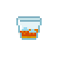 | Amaretto | 25 | 1 part Amaretto | A gentle and syrup like drink, tastes of almonds and apricots. | To acquire: In Booze-O-Mat, 5 bottles Luini Amaretto |

|
Applejack | 20 | 1 part applejack | The perfect beverage for when you feel the need to horse around. | To acquire: In Booze-O-Mat, 5 bottles of Buckin' Bronco's Applejack. |
| Apple Juice | N/A | 1 part apple juice | The sweet juice of an apple, fit for all ages. | To acquire: Juice an apple. | |

|
Banana Juice | N/A | 1 part banana juice | The raw essence of a banana. HONK | Heals clowns and monkeys of brute and burn damage To acquire: Grind or juice bananas. |

|
Beer | 25 | 1 part beer | A freezing pint of beer. | To acquire: In Booze-O-Mat, 6 bottles of Space Beer, 30 units each. Or 1000 units in Bartender's beer keg. Or from Service borg shaker. Or mix 10 parts Flour, 5 units universal enzyme (catalyst). |

|
Berry Juice | N/A | 1 part berry juice | berry juice. Or maybe it's jam. Who cares? | To acquire: Juice berries. |

|
Bungo Juice | N/A | 1 part bungo juice | Exotic! You feel like you are on vactation already. | Heals clowns and monkeys of brute and burn damage To acquire: Juice bungo fruit |

|
Carrot juice | N/A | 1 part carrot juice | It is just like a carrot but without crunching. | Heals eye damage. To acquire: Juice carrots. |

|
Champagne | 40 | 1 part champagne | A sparkling wine known for its ability to strike fast and hard. | To acquire: Booze-O-Mat, 5 bottles of Eau d' Dandy Brut Champagne. |
|
|
Clown's Tears | N/A | 1 part clown's tears | Not very funny. | To acquire: Grind some clown's tear soup. |

|
Coffee | N/A | 1 part coffee | Don't drop it, or you'll send scalding liquid and glass shards everywhere. | Heals dizziness, drowsiness, wakes up, heats up if frozen. To acquire: Grind dried coffee beans to get Coffee Powder. Mix 1 Coffee Powder + 5 units water. Or from the Hot Drinks -vending machines. |
| Cognac | 75 | 1 part cognac | Damn, you feel like some kind of French aristocrat just by holding this. | To acquire: In Booze Dispenser. Or in Booze-O-Mat, 5 bottles of Chateau De Baton Premium Cognac, 100 units each. Or from Service borg shaker. | |
| Creme de Coconut | 20 | 1 part creme de coconut | A coconut liqueur for smooth, creamy, tropical drinks. | To acquire: In Booze Dispenser. | |

|
Creme de Menthe | 20 | 1 part creme de menthe | A minty liqueur excellent for refreshing, cool drinks. | To acquire: In Booze Dispenser. |
| Creme de Cacao | 20 | 1 part creme de cacao | A chocolatey liqueur excellent for adding dessert notes to beverages and bribing sororities. | To acquire: In Booze Dispenser. | |
| 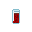 | Dr. Gibb | N/A | 1 part Dr. Gibb | Dr. Gibb. Not as dangerous as the name might imply. | Heals drowsiness, cools down if overheated. To acquire: 10 cans of Space Mountain Wind in Robust Softdrinks -vending machines. |

|
Fernet | 80 | 1 part Fernet | Pure Fernet Bronca. Only an absolute madman would drink this pure. | Reduces satiety a lot, but causes a lot of toxin damage if starving. To acquire: In hacked Booze-O-Mat, 5 bottles of Fernet Bronca, 100 units each. Or from Service borg shaker. |
|
|
Garlic Juice | N/A | 1 part garlic juice | Crushed (not juiced)garlic. Chefs love it. | 20% chance per tick to heal 1 brute and burn if you're a cook. Prevents vampires from biting you. Very slow metabolism rate (0.06u). To acquire: Grind garlic. |
| Gin | 45 | 1 part gin | It's gin. In space. I say, good sir. | To acquire: In Booze Dispenser. Or In Booze-O-Mat, 5 bottles of Griffeater Gin, 100 units each. ...??? | |
| 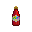 | Grenadine | N/A | 1 part grenadine | Delicious flavored syrup. | To acquire: In Booze-O-Mat. |

|
Glass of Ice | N/A | 1 part ice | Generally, you're supposed to put something else in there too... | Cools down. To acquire: In Booze-O-Mat, 9 Ice Cups, 30 units each. Or from Service borg shaker. |

|
Hard Cider | 25 | 1 part hard cider | Apple juice, for adults. | Cools down. To acquire: In Booze-O-Mat, 5 Jian Hard Cider, 50u each. |
| Holy Water | N/A | 1 part holy water | A glass of holy water. | Makes people jittering, stuttering, dizzy. Heals cultism. To acquire: Have the Chaplain hit a water container with the Bible. Or One Flask of Holy Water, 100 units, in the Chapel. | |

|
Kahlúa | 45 | 1 part Kahlúa | DAMN, THIS THING LOOKS ROBUST | Heals dizziness, drowsiness and sleeping. To acquire: In Booze Dispenser. Or Booze-O-Mat, 5 bottles of Robert Robust's Coffee Liqueur, 100 units each. Or from Service borg shaker. Or mix 5 coffee + 5 sugar + 5 universal enzyme. |
| Lemon Juice | N/A | 1 part lemon juice | Sour... | To acquire: In Soda Dispenser. Or juice lemons. | |
|
|
Lemon-Lime | N/A | 1 part Lemon-Lime | You're pretty certain a real fruit has never actually touched this. | Cools down if overheated. To acquire: In Soda Dispenser. Or 10 cans of Lemon-Lime in Robust Softdrinks -vending machines. |
|
|
Light Beer | 5 | 1 part light beer | A freezing pint of diet beer. | To acquire: Normally found in some prisons and ruins. Pray to the Ruin RNG or God and hope they feel merciful today. |
|
|
Lime Juice | N/A | 1 part lime juice | A glass of sweet-sour lime juice. | 20% chance to heal 1 toxin damage. To acquire: In Soda Dispenser. Or In Booze-O-Mat, 4 bottles of Lime Juice, 100 units each. Or from Service borg shaker. Juice limes. |
|
|
Menthol | N/A | 1 part menthol | Tastes naturally minty, and imparts a very mild numbing sensation. | Prevents coughing. To acquire: In Booze-O-Mat, 4 cartons of Menthol, 100 units each. Or from the soda dispenser. |
| Milk | N/A | 1 part milk | White and nutritious goodness! | 20% chance per tick to heal 1 brute damage in a random body part and purges capsaicin oil. To acquire: Biogenerator. Or milk a goat or a cow. Or from | |
| Milk Cream | N/A | 1 part cream | Ewwww... | 20% chance per tick to heal 1 brute damage in a random body part. To acquire: In Booze-O-Mat (cream), 4 bottle of Milk Cream, 100 units each. Or from Service borg shaker. Or from the Biogenerator. | |
| Nothing | N/A | 1 part nothing | Absolutely nothing. | Heals mimes of brute damage and mutes them. To acquire: Mime's Bottle of Nothing, or by grinding Mimanas. | |
| Orange Juice | N/A | 1 part orange juice | Vitamins! Yay! | 30% chance to heal 1 suffocation damage. To acquire: In Booze-O-Mat, 4 bottles of Orange Juice, 100 units each. Or from Service borg shaker. 15 units in each can of Star-kist, along with 15 units of space cola. Or juice oranges. | |

|
Parsnip Juice | N/A | 1 part parsnip juice | Why... | To acquire: Juice a parsnip. |
| Peach Juice | N/A | 1 part peach juice | Just peachy. | To acquire: Grind canned peaches, which can only be found in maintenance. | |
| Pineapple Juice | N/A | 1 part pineapple juice | Tart, tropical, and hotly debated. | To acquire: In Soda Dispenser. Or juice pineapples. | |
| Poison Berry Juice | N/A | 1 part poison berry juice | berry juice. Or maybe it's poison. Who cares? | Shows up as 'Berry Juice'. Crit dose: 40 units/100 ticks. To acquire: Juice poison berries. | |
|
|
Potato Juice | N/A | 1 part potato juice | Bleh... | To acquire: Juice potatoes. |
| Rum | 60 | 1 part rum | Now you want to Pray for a pirate suit, don't you? | To acquire: In Booze Dispenser. Or in Booze-O-Mat, 5 bottles of Captain Pete's Cuban Spiced Rum, 100 units each. Or from Service borg shaker. | |
| Sake | 70 | 1 part sake | A sweet rice wine of questionable legality and extreme potency. | To acquire: In Booze Dispenser. Or in Booze-O-Mat. Or mix 10 parts Rice, 5 units universal enzyme (catalyst). | |
| Soda Water | N/A | 1 part soda water | Why not make a scotch and soda? | Heals dizziness and drowsiness. Cools down if overheated. To acquire: In Booze-O-Mat, 15 bottles of Soda Water, 50 units each. Or from Service borg shaker. | |
| Sol Dry | N/A | 1 part Sol Dry | A soothing, mellow drink made from ginger. | Reduces disgust. To acquire: 10 cans of Sol Dry in Robust Softdrinks -vending machines. Or 8 cans in Booze-O-Mat. 30 units in each can. | |
| Soy Milk | N/A | 1 part soy milk | White and nutritious soy goodness! | 20% chance per tick to heal 1 brute damage in a random body part. To acquire: Biogenerator or from Soy Milk cartons, 50 units in each. 5 are found in kitchen freezer. Ordered food crate has one. | |

|
Space Cola | N/A | 1 part Space Cola | A glass of refreshing Space Cola. | Cools down if overheated. To acquire: 10 cans of Space Cola in Robust Softdrinks -vending machines. Or 8 cans in Booze-O-Mat. Or from Service borg shaker. 30 units in each can of Space Cola, 15 units in each can of Star-kist, along with 15 units of orange juice. |
| Space Mountain Wind | N/A | 1 part Space Mountain Wind | Space Mountain Wind. As you know, there are no mountains in space, only wind. | Heals drowsiness and sleeping, cools down if overheated. To acquire: 10 cans of Space Mountain Wind in Robust Softdrinks -vending machines. | |
| Space-Up | N/A | 1 part Space-Up | Space-Up. It helps keep your cool. | Cools down if overheated. To acquire: 10 cans of Space-Up in Robust Softdrinks -vending machines. | |

|
Tea | N/A | 1 part tea | Drinking it from here would not seem right. | Similar to coffee but also removes jitteriness and a small amount of toxins. To acquire: Grind dried tea leaves to get Tea Powder. Mix 1 Tea Powder + 5 units water. Or from the Hot Drinks -vending machines. |
| Tequila | 70 | 1 part tequila | Now all that's missing is the weird colored shades! | To acquire: In Booze Dispenser. Or in Booze-O-Mat, 5 bottles of Caccavo Guaranteed Quality Tequila, 100 units each. Or from Service borg shaker. | |

|
Tomato Juice | N/A | 1 part tomato juice | Are you sure this is tomato juice? | 20% chance to heal 1 burn damage. Blood shows the same way. To acquire: In Booze-O-Mat, 4 bottles of Tomato Juice, 100 units each. Or from Service borg shaker. Juice tomatoes. |
| Tonic Water | N/A | 1 part tonic water | Quinine tastes funny, but at least it'll keep that Space Malaria away. | Heals dizziness, drowsiness and sleeping, cools down if overheated. To acquire: In Booze Dispenser. Or in Booze-O-Mat, 8 bottles of T-Borg's Tonic Water, 50 units each. Or from Service borg shaker. | |
| Triple Sec | 30 | 1 part triple sec | A sweet and vibrant orange liqueur. | To acquire: In a booze dispenser. | |

|
Vermouth | 45 | 1 part vermouth | You wonder why you're even drinking this straight. | To acquire: In Booze Dispenser. Or in Booze-O-Mat, 5 bottles of Goldeneye Vermouth, 100 units each. Or from Service borg shaker. |
| Vodka | 65 | 1 part vodka | The glass contain wodka. Xynta. | To acquire: In Booze Dispenser. Or mix 10 potato juice + 5 universal enzyme | |
| Water | N/A | 1 part water | The father of all refreshments. | To acquire: Sinks. Watertanks. | |
| Watermelon Juice | N/A | 1 part watermelon juice | A glass of watermelon juice. | To acquire: Juice watermelon slices. | |
| Welder Fuel | N/A | 1 part welding fuel | Unless you are an industrial tool, this is probably not safe for consumption. | Crit dose: 40 units/100 ticks. To acquire: Find a Welding fuel tank. | |
| Whiskey | 75 | 1 part whiskey | A superb and well-aged single-malt whiskey. Damn. | To acquire: In Booze Dispenser. Or in Booze-O-Mat, 5 bottles of Uncle Git's Special Reserve, 100 units each. | |
| Wine | 35 | 1 part wine | A very classy looking drink. | To acquire: In Booze-O-Mat, 5 bottles of Doublebeard Bearded Special Wine, 100 units each. Or from Service borg shaker. Or mix 10 grape juice + 5 universal enzyme (10u enzyme instantly turns it into grappa). |
Mixed Drinks
| Picture | Cocktail | Strength | Ingredients | Drink Description | Notes |
|---|---|---|---|---|---|

|
Acid Spit | 70 | 5 Parts Wine Obtained by. Booze-O-Mat, 5 bottles of Doublebeard Bearded Special Wine, 100u each. Service Borg shaker. Or make it yourself.
Obtained by 10u grape juice. Obtained by. Juicing grapes. 5u universal enzyme. (Catalyst) (Instantly turns into Grappa) 1 part Sulphuric Acid Obtained from: Chemsitry. |
A drink from Nanotrasen. Made from live aliens. | |

|
Alexander | 50 | 1 part cognac Obtained from. Booze Dispenser. Booze-O-Mat, 5 bottles of Chateau De Baton Premium Cognac, 100 units each. Service Borg shaker. 1 part Cream de Cacao Obtained from. Booze Dispenser. 1 part Cream Obtained by. Booze-O-Mat, 4 bottles of Milk Cream, 100u each. Service Borg shaker. Biogenerator. |
A creamy, indulgent delight that is stronger than it seems. | If you have a shield it will increase the block chance by 10 percentage points. IBA Official Cocktail |

|
Allies Cocktail | 45 | 1 part Classic Martini 1 part Vodka Obtained by. Booze Dispenser. Or make it yourself.
|
A drink made from your allies. | Refers to Triple Entente: French Vermouth, Russian Vodka, English Gin. |

|
Aloe | 35 | 3 parts Watermelon Juice 1 part Cream Obtained by. Booze-O-Mat, 4 bottles of Milk Cream, 100u each. Service Borg shaker. Biogenerator. 2 parts Whiskey Obtained by. Booze Dispenser. Booze-O-Mat, 5 bottles of Uncle Git's Special Reserve, 100u each. |
Very, very, very good. | |
| Amaretto Alexander | 35 | 1 part Amaretto Obtained from. Booze-O-Mat, 5 bottles Luini Amaretto, 100u each 1 part Cream Obtained by. Booze-O-Mat, 4 bottles of Milk Cream, 100u each. Service Borg shaker. Biogenerator. 1 part Creme de Cacao Obtained from. Booze Dispenser. |
A creamy, indulgent delight that is in fact as gentle as it seems. | ||

|
Amasec | 35 | 1 part Iron Obtain from: Chemistry 5 part Wine Obtained by. Booze-O-Mat, 5 bottles of Doublebeard Bearded Special Wine, 100u each. Service Borg shaker. Or make it yourself.
Obtained by 10u grape juice. Obtained by. Juicing grapes. 5u universal enzyme. (Catalyst) (Instantly turns into Grappa) 5 part Vodka Obtained by. Booze Dispenser. Or make it yourself.
|
Always handy before COMBAT!!! | Warhammer 40k drink |
| Andalusia | 40 | 1 part Rum Obtained by. Booze Dispenser. Booze-O-Mat, 5 bottles of Captain Pete's Cuban Spiced Rum, 100u each. Service Borg shaker. 1 part Whiskey Obtained by. Booze Dispenser. Booze-O-Mat, 5 bottles of Uncle Git's Special Reserve, 100u each. 1 part Lemon Juice |
A nice, strangely named drink. | ||
| 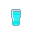 | Anti-Freeze | 35 | 2 parts vodka, 1 part cream, 1 part ice | The ultimate refreshment. | Heats you up if you are frozen. |
| Archmagus' Brew | 40 | 2 parts Wizz Fizz, 1 part Crevice Spike, 1 part Stinger | Said to have been requested by a great Archmagus, hence the name. Tastes like tough love. | If the drinker is a wizard, makes them not need robes to cast spells anymore, permanently. | |
| Arnold Palmer | N/A | 1 part lemonade, 1 part tea | Encourages the patient to go golfing. | ||
| Atomic Bomb | N/A | 10 parts B-52, 1 part Uranium | Nanotrasen cannot take legal responsibility for your actions after imbibing. | Makes you druggy, confused, dizzy, stuttering; eventually, sleeping. Can be mixed in a shot glass. Makes 10 parts instead of 11. | |
| 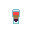 | B-52 | 85 | 1 part irish cream, 1 part Kahlúa, 1 part cognac | Kahlua, Irish Cream, and cognac. You will get bombed. | IBA Official Cocktail |

|
Bacchus' Blessing | 300 | 1 part Hooch, 1 part absinthe, 1 part Manly Dorf, 1 part Syndicate Bomb | Unidentifiable mixture. Unmeasurably high alcohol content. | Can kill you if you drink enough. |

|
Bahama Mama | 35 | 2 parts rum, 1 part Creme de Coconut, 1 part Kahlúa, 1 part pineapple juice | Tropic cocktail. | Existing cocktail |
| 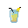 | Banana Honk | 60 | 1 part laughter, 1 part cream | A drink from Clown Heaven. | Heals clowns and monkeys of brute and burn damage. |

|
Barefoot | 45 | 1 part cream, 1 part vermouth, 1 part berry juice | Barefoot and pregnant. | Quickly heals brute damage when not wearing shoes. |

|
Bastion Bourbon | 30 | 1 part tea, 1 part creme de menthe, 1 part triple citrus, 1 part berry juice | Soothing hot herbal brew with restorative properties. Hints of citrus and berry flavors. | When it's in your system, it will very slowly heal you as long as you're not in critical. When it's first added to your system, you heal an amount of each damage type equal to the volume taken in, with a max of 10. This is turned to a max of 20 for anyone in critical. Results in 2 parts instead of 4. |
| 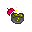 | Beepsky Smash | 60 | 2 parts quadruple sec, 2 parts lime juice, 1 part Iron | Heavy, hot and strong. Just like the Iron fist of the LAW. | Summons a stream of securitron hallucinations, which run at you one by one and deal 40 to 70 stamina damage. If overdosed (40 units) you become traumatised with a phobia of security. If you are a proper member of security, you instead regenerate 10 stamina, get minor hallucinations and won't get overdosed. Metabolization rate is 0.5. |
| Between the Sheets | 55 | 1 part rum, 2 parts cognac, 1 part triple sec, 1 part lemon juice | A provocatively named classic. | Having this in your system while you're asleep will slowly heal you. IBA Official Cocktail | |

|
Bilk | 15 | 1 part beer, 1 part milk | A brew of milk and beer. For those alcoholics who fear osteoporosis. | 10% chance per tick to heal 1 brute damage in a random body part. |
| 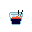 | Black Russian | 70 | 3 parts vodka, 2 parts Kahlúa | For the lactose-intolerant. Still as classy as a White Russian. | IBA official cocktail |
| Blank Paper | 20 | 1 part Silencer, 1 part nothing, 1 part Nuka Cola | A fizzy cocktail for those looking to start fresh. | Heals and mutes mimes. | |
| Blazaam | 70 | 1 part peach juice, 1 part Bluespace Dust , 2 parts gin
Grind a Bluespace Crystal
|
The glass seems to be sliding between realities. Doubles as a Berenstain remover. | Can randomly teleport you short distances and makes you vomit if drunk enough. Makes your vomit look different. Results in 3 parts instead of 4. | |

|
Bloody Mary | 55 | 1 part vodka, 2 parts tomato juice, 1 part lime juice | Tomato Juice, mixed with Vodka and a lil' bit of lime. Tastes like liquid murder. | Restores blood. IBA official cocktail |
| 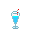 | Blue Cherry Shake | N/A | 1 part ice, 1 part cream , 1 part blue cherry jelly | A blue cherry flavored milkshake. | |
| 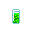 | Booger | 45 | 1 part cream, 1 part banana juice, 1 part rum, 1 part watermelon juice | Ewww... | |

|
Branca Menta | 35 | 1 part Fernet, 1 part Creme de Menthe, 1 part Ice | A refreshing mixture of bitter Fernet with mint creme liquour. The closest you'll ever get to the original. | Cools you down if overheated. Causes a tick of 35 stamina damage when first drank. |

|
Brave Bull | 60 | 2 parts tequila, 1 part Kahlúa | Tequila and Coffee liquor, brought together in a mouthwatering mixture. Drink up. | Temporarily increases maximum health. Existing cocktail |
| Bug Spray | 50 | 2 parts rum, 2 parts triple sec, 1 part lemon lime, 1 part vodka | A harsh, acrid, bitter drink, for those who need something to brace themselves. | Deals 1 toxin per tick to mothpeople and flypeople. Results in 5 parts instead of 6. | |
| Candy Corn Liquor | 75 | 1 glass bottle, 1 candy corn, 100 units Whiskey | Good for your Imagination. | Causes mild hallucinations. Must be crafted with crafting menu . | |
| 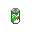 | Changeling Sting | 50 | 2 part lemon-lime, 1 part Screwdriver Cocktail | A stingy drink. | Restores chemicals for changelings. Makes 5 parts instead of 3. |

|
Cherry Shake | N/A | 1 part ice, 1 part cream, 1 part cherry jelly. | A cherry flavored milkshake. | |
| Chocolate | N/A | 5 parts water, 1 part Coco Powder | Tasty. | Heats up if frozen | |
| Chocolate Milk | N/A | 1 part Milk, 1 part Coco Powder, under 320K temperature. | Tasty. | 20% chance per tick to heal 1 brute damage in a random body part and purges capsaicin oil. | |

|
Chocolate Pudding | N/A | 2 parts Chocolate Milk, 1 part Egg Yolk | A chocolate flavored pudding in a glass. | |
| 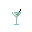 | Classic Martini | 60 | 2 parts gin, 1 part vermouth | Damn, the bartender even stirred it, not shook it. | IBA official cocktail |

|
Cafe Latte | N/A | 1 part coffee, 1 part milk | A nice, strong and refreshing beverage while you are reading. | Heals dizziness, drowsiness, wakes up, heats up if frozen and 20% chance per tick to heal 1 brute damage in a random body part. |
| CogChamp | 10 | 1 part welding fuel, 1 part cognac, 1 part Screwdriver Cocktail | Not one of Ratvar's Four Generals could withstand this! Qevax Jryy! | Causes you to slur clockcult phrases instead of normal slurring. Results in 1 part instead of 3. | |

|
Cream Soda | N/A | 2 parts soda water, 2 parts sugar, 1 part vanilla | A classic space-American vanilla flavored soft drink. | Cools down if overheated. Results in 4 parts instead of 5. |

|
Crevice Spike | -10 | 2 parts lime juice, 4 parts capsaicin | Sour, bitter, and smashingly sobering. | It's negative drink power sobers you up, but it deals 3 damage per unit when it first enters your system, up to a max 15 damage on a full 5 unit swig. Won't hurt again until it metabolizes out. Drink from VA-11 Hall-A |

|
Cuba Libre | 50 | 3 parts Rum and Coke, 1 part lime juice | A classic mix of rum, cola, and lime. | Heals revolutionaries. IBA official cocktail |
| Darkest Chocolate | 40 | 2 parts Black Russian, 2 parts Creme de Cacao, 1 part Irish Car Bomb | Darkness within darkness awaits you, spaceman! | Makes you emit a faint, shadowy glow. | |
| Demons Blood | 75 | 1 part Space Mountain Wind, 1 part rum, 1 part blood, 1 part Dr. Gibb | Just looking at this thing makes the hair at the back of your neck stand up. | Prevents slaughter demons from dragging you into pools of blood. | |
| Devil's Kiss | 70 | 1 part Blood, 1 part rum, 1 part Kahlúa | Creepy time! | Causes slaughter demons to take brute damage and eject you if they try to eat you. | |

|
Doctor's Delight | N/A | 1 part lime juice, 1 part tomato juice, 1 part orange juice, 1 part cream, 1 part Cryoxadone | A healthy mixture of juices, guaranteed to keep you healthy until the next toolboxing takes place. | Heals 0.5 of each basic damage type (brute/burn/toxin/oxyloss) every tick, at the cost of making you hungry (unless your roundstart job is in the medical department, in which case it has no effect on your hunger). |
| Driest Martini | 65 | 1 part Nothing, 1 part gin | Only for the experienced. You think you see sand floating in the glass. | Nothing is found in the Mime's Bottle of Nothing | |

|
Drunken Blumpkin | 50 | 1 part blumpkin juice, 2 parts irish cream, 1 part ice | A weird mix of whiskey and blumpkin juice, with cream on top | |

|
Duplex | 25 | 2 parts hard cider, 1 part apple juice, 1 part berry juice | An inseparable combination of two fruity drinks. | |

|
Eggnog | 1 | 5 parts egg yolk, 5 parts rum, 5 parts cream | For enjoying the most wonderful time of the year. | |
| Erika Surprise | 35 | 1 part ale, 1 part lime juice, 1 part whiskey, 1 part ice, 1 part banana juice | The surprise is, it's green! | ||

|
Fanciulli | -10 | 1 part Manhattan, 1 part Fernet | What if the Manhattan coctail ACTUALLY used a bitter herb liquour? | Reduces satiety. Sobers you up. Causes a tick of 20 stamina damage when first drank. Existing drink. |

|
Fernet Cola | 25 | 1 part Fernet, 1 part Cola | A very popular and bittersweet digestif, ideal after a heavy meal. Best served on a sawed-off cola bottle as per tradition. | Reduces satiety. Causes toxin damage if starving. Tastes like heaven. |
| Fetching Fizz | 10 | 1 part Nuka Cola, 1 part Iron | Whiskey sour/iron/uranium mixture resulting in highly magnetic slurry. Mild alcohol content. | Causes nearby ores to slowly move towards you. Results in 3 parts instead of 2. | |

|
Freezer Burn | 40 | 1 part Mojito, 1 part Sbiten | Fire and ice combine in your mouth! Drinking slowly recommended. | Slowly heals burn damage. |

|
Fringe Weaver | 90 | 9 parts Ethanol, 1 part sugar | Bubbly, classy, and undoubtedly strong - a Glitch City classic. | Drink from VA-11 Hall-A |

|
Gibb Floats | N/A | 5 parts dr gibb, 5 parts ice, 5 parts cream | Icecream on top of a Dr. Gibb glass. | |

|
Gin Fizz | 45 | 2 parts gin, 1 part soda water, 1 part lime juice | Refreshingly lemony, deliciously dry. | IBA Official Cocktail |

|
Ginger Amaretto | 30 | 1 parts Amaretto, 1 part sol dry, 1 part lemon juice1 part ice | The sprig of rosemary adds a nice aroma to the drink, and isn't just to be pretentious afterall! | |

|
Gin and Tonic | 25 | 2 parts gin, 1 part tonic water | A mild but still great cocktail. Drink up, like a true Englishman. | |
| Godfather | 50 | 1 parts amaretto, 1 part whiskey | A classic from old Italy and enjoyed by gangsters, pray the orange peel doesnt end up in your mouth. | ||
| 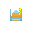 | Godmother | 50 | 1 parts amaretto, 1 part vodka | A lovely fresh smelling cocktail, a true Sicilian delight. | |

|
Goldschlager | 25 | 10 parts vodka, 1 part Gold | 100 proof that teen girls will drink anything with gold in it. | Exists in real world Makes 10 parts instead of 11. |

|
Grape Soda | N/A | 1 part grape juice, 1 part soda water | Beloved of children and teetotalers. | Cools you down if overheated. |
| Grappa | 60 | 1 part wine, 10 units universal enzyme (catalyst) | A fine Italian brandy, for when regular wine just isn't alcoholic enough for you. | ||

|
Grasshopper | 25 | 5 parts cream, 5 parts creme de menthe, 5 parts creme de cacao | A fresh and sweet dessert shooter. Difficult to look manly while drinking this. | IBA Official Cocktail |

|
Green Beer | 25 | 10 parts beer, 1 part Green Crayon Powder | A freezing pint of green beer. Festive. | Turns you green. Makes 10 parts instead of 11. |

|
Grog | 1 | 1 part water, 1 part rum | A fine and cepa drink for Space. | Exists in real world |
| 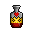 | Hearty Punch | 90 | 5 parts Brave Bull, 5 parts Syndicate Bomb, 5 parts absinthe (requires temperature of 315) | Brave bull/syndicate bomb/absinthe mixture resulting in an energizing beverage. Mild alcohol content. | Provides quick healing for people in critical condition. Results in 1 part instead of 15. |
| 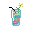 | Hippie's Delight | N/A | 1 part Mushroom Hallucinogen, 1 part Pan-Galactic Gargle Blaster | A drink enjoyed by people during the 1960's. | Makes you druggy, stuttering and dizzy, then jittering |
| 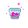 | Hivemind Eraser | 40 | 2 parts Black Russian, 1 part Grenadine, 1 part Thirteen Loko | A vessel of pure flavor. For when even mindshields can't save you. | See Hivemind Host. |
| Hooch | 100 | 2 parts Ethanol, 1 part welding fuel, 1 unit universal enzyme (catalyst) | You've really hit rock bottom now... your liver packed its bags and left last night. Heals assistants. | Slang for moonshine or bootleg alcohol, popular term during prohibition era | |

|
Hot Ice Coffee | N/A | 1 part coffee, 1 part | A sharp drink. This can't have come cheap. | Heals dizziness, drowsiness, wakes up, heats up if frozen and deals 1 toxin damage. |
| Iced Beer | 15 | 5 parts beer, 1 part ice or 10 parts beer, 1 part frost oil | A beer so frosty, the air around it freezes. | Cools you down if overheated | |

|
Iced Coffee | N/A | 1 part ice, 3 parts coffee | A drink to perk you up and refresh you! | Cools you down if overheated, removes dizziness, drowsiness and sleep |

|
Iced Tea | N/A | 1 part ice, 3 parts tea | All natural, antioxidant-rich flavour sensation. | Cools you down if overheated, removes dizziness, drowsiness and sleep. Heals toxin damage. |
| 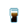 | Irish Car Bomb | 25 | 1 part irish cream, 1 part ale | An Irish car bomb. | Exists in real world |
| 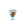 | Irish Coffee | 35 | 2 parts irish cream, 2 parts coffee | Coffee and alcohol. More fun than a Mimosa to drink in the morning. | IBA Official Cocktail |

|
Irish Cream | 50 | 2 parts whiskey, 1 part cream | It's cream, mixed with whiskey. What else would you expect from the Irish? | Exists in real world |
| 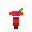 | Jack Rose | 15 | 2 parts applejack, 1 part grenadine, 1 part lime juice | A light cocktail perfect for sipping with a slice of pie. | Exists in real life |
| Kamikaze | 60 | 1 part vodka, 1 part triple sec, 1 part lime juice | Divinely windy. | IBA Official Cocktail | |
| Kong | 75 | 1 glass bottle, 1 candy corn, 100 units Whiskey | Makes You Go Ape! | Has an addiction threshold of 15 units. When in withdrawal, occasionally gives negative moodlets on top of the usual one, while giving depressive messages. Must be crafted with crafting menu . | |

|
Lean | N/A | 1 Colo cup, 2 Gumball, 5u Morphine, 15u SpaceUp | The drank that makes you go wheezy. | Slurs Speech and makes you druggy. Must be crafted with crafting menu . |

|
Lemonade | N/A | 2 parts lemon juice, 2 parts water, 1 part sugar, 1 part ice | Sweet, tangy lemonade. Good for the soul. Results in 5 parts instead of 6. | |
| 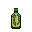 | Lizard Wine | 45 | 1 Lizard Tail, 100 units Ethanol | An alcoholic beverage from Space China, made by infusing lizard tails in ethanol. Inexplicably popular among command staff. | Both delicious and unethical. Must be crafted with crafting menu . |

|
Long Island Iced Tea | 35 | 1 part vodka, 1 part gin, 1 part Cuba Libre, 1 part tequila | The liquor cabinet, brought together in a delicious mix. Intended for middle-aged alcoholic women only. | IBA Official Cocktail |

|
Manhattan | 30 | 2 parts whiskey, 1 part vermouth | The Detective's undercover drink of choice. He never could stomach gin... | IBA Official Cocktail |
| Manhattan Project | 45 | 10 parts Manhattan, 1 part Uranium | A scienitst drink of choice, for thinking how to blow up the station. | Makes you druggy. Makes 10 parts instead of 11. | |

|
Margarita | 35 | 2 parts tequila, 1 part triple sec, 1 part lime juice | On the rocks with salt on the rim. ¡Arriba! | IBA Official Cocktail |
| Mead | 30 | 2 units Honey, 5 units universal enzyme (catalyst) | A Vikings Beverage, though a cheap one. | Exists in real world | |
| 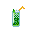 | Mojito | 30 | 1 part rum, 1 part sugar, 1 part lime juice, 1 part soda water, 1 part menthol | A drink that looks as refreshing as it tastes. | IBA Official Cocktail |
| Moonshine | 95 | 5 units Nutriment, 5 units Sugar, 5 units universal enzyme (catalyst) | You've really hit rock bottom now... your liver packed its bags and left last night. | ||
| 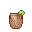 | Moscow Mule | 30 | 5 parts Sol Dry, 5 parts vodka, 1 part lime juice, 1 part ice | A chilly drink that reminds you of the Derelict. | |
| 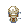 | Mudder's Milk | 15 | 1 part sugar, 3 parts Irish Cream, 2 parts beer, 1 unit Creme De Cacao (catalyst) | All the protein, vitamins and carbs of your grandma's best turkey dinner, plus 15 percent alcohol. | Periodically puts nutriment in your bloodstream. Very slightly reduces stun times. |
| Narsour | 10 | 1 part blood, 1 parts lemon juice, 1 part demons blood | A new hit cocktail inspired by THE ARM Breweries will have you shouting Fuu ma'jin in no time! | Causes you to slur cult phrases instead of normal slurring. Results in 1 part instead of 3. | |
| Nuka Cola | N/A | 1 part Uranium, 6 parts Space Cola | Don't cry, Don't raise your eye, It's only nuclear wasteland | Makes you druggy, dizzy, wakes you up and gives you higher speed. Reference to Fallout. | |
| 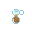 | Old Timer | 35 | 3 parts whiskey soda, 2 parts parsnip juice, 1 part Alexander | An archaic potation enjoyed by old coots of all ages. | Makes you older. And older, and older. |
| 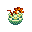 | Out Of Lime | 40 | 1 part Out Of Touch, 1 part lemonade, 1 part Green Beer, 1 part orange juice | A spin on the classic. Artists and street fighters swear by this stuff. | Drinking or getting this splashed on you turns your hair and facial hair color into one of 10 possible ones randomly. |

|
Out Of Touch | 40 | 2 parts Screwdriver Cocktail, 1 part Margarita | Perfect for when you're out of time. | Splashing this on metal turns it into bronze, 1 unit per sheet. |

|
Neurotoxin | 50 | 1 part Morphine, 1 part Pan-Galactic Gargle Blaster | A drink that is guaranteed to knock you silly. | Drugs you, makes you dizzy, deals up to 75% brain damage over time, randomly causes you to drop items and take stamina damage. After 5 cycles starts randomly paralyzing your limbs. After 30 cycles deals more brain damage but without limit. After 50 cycles (over 20 units) it has a 15% chance per cycle to give you a heart attack. Metabolism rate is 0.4 units. Quickly purged by Neurine. |

|
Pan-Galactic Gargle Blaster | N/A | 1 part gin, 1 part vodka, 1 part whiskey, 1 part cognac, 1 part lime juice | Does... does this mean that Arthur and Ford are on the station? Oh joy. | Makes you dizzy, then stuttering, then confused, then druggy Drink from The Hitchhiker's Guide to the Galaxy |

|
Painkiller | 20 | 5 parts Creme de Coconut, 4 parts pineapple juice, 1 part orange juice | Dulls your pain. Your emotional pain, that is. (Does nothing.) | |

|
Patron | 60 | 10 parts tequila, 1 part Silver | Drinking patron in the bar, with all the subpar ladies. | Exists in real world Makes 10 parts instead of 11. |
| 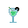 | Peppermint Patty | 25 | 6 parts hot coco, 1 part creme de cacao, 1 part creme de menthe, 1 part vodka, 1 part menthol | This lightly alcoholic drink combines the benefits of menthol and cocoa. | Prevents coughing, heats you up and comes from Archer. |

|
Pina Colada | 40 | 3 parts pineapple juice, 1 part lime juice, 1 part Creme de Coconut, 1 part rum | A fresh pineapple drink with coconut rum. Yum. | Results in 5 parts instead of 6. |
| 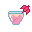 | Planet Cracker | 50 | 2 parts champagne, 2 parts lizard wine, 1 part egg yolk, 1 part gold | This jubilant drink celebrates humanity's triumph over the alien menace. May be offensive to non-human crewmembers. | Results in 4 parts instead of 6. |
| Pruno | 85 | First make pruno mix by crafting it (via the crafting menu) with the following ingredients: 1 trashbag, 1 slice of moldy bread, 4 grown edible plants, 2 candy corn and of 15 units water. Put the newly created mix in a toilet or washing machine and wait 30 seconds. | Fermented prison wine made from fruit, sugar, and despair. Security loves to confiscate this, which is the only kind thing Security has ever done. | Disgusting. | |

|
Mauna Loa | 40 | 2 parts Bahama Mama, 2 parts capsaicin oil, 1 part Kahlua | Extremely hot; not for the faint of heart! | Can make you very hot. |

|
Pumpkin Latte | N/A | 5 parts pumpkin juice, 5 parts coffee, 5 parts cream | A delicious mix of pumpkin juice and coffee. | |

|
Quadruple Sec | 35 | 5 parts triple sec, 5 parts triple citrus, 5 parts creme de menthe | Kicks just as hard as licking the powercell on a baton, but tastier. | Heals people with security personnel livers 1 damage in all body parts per tick. |

|
Quintiple Sec | 55 | 5 parts quadruple sec, 5 parts clown's tears, 5 parts syndicate bomb | Law, Order, Alcohol, and Police Brutality distilled into one single elixir of JUSTICE. | Heals people with security personnel livers 2 damage in all body parts per tick. Has a high alcohol level, and will make you seriously drunk with a few sips. |
| Red Mead | 31 | 1 part mead, 1 part blood | A True Vikings Beverage, though its color is strange. | ||

|
Red Queen | N/A | 6 parts tea, 2 parts mercury, 1 part black pepper, 1 part | DRINK ME. | Randomly changes your size while it's in your system. |

|
Rubberneck | 60 | 5 parts Grey Bull, 4 parts ethanol, 1 part astrotame | A popular drink amongst those adhering to an all synthetic diet. | |

|
Rum and Coke | 40 | 2 parts rum, 1 part space cola | The classic go-to of space-fratboys. | |

|
Sbiten | 70 | 1 part vodka, 1 part Capsaicin | A spicy mix of Vodka and Spice. Very hot. | Heats you up if you are frozen Exists in real world |

|
Screwdriver Cocktail | 55 | 2 parts vodka, 1 part orange juice | A simple, yet superb mixture of Vodka and orange juice. Just the thing for the tired engineer. | Quickly removes radiation for the CE, engineers and atmos techs. IBA Official Cocktail |

|
Sidecar | 45 | 2 parts cognac, 1 part triple sec, 1 part lemon juice | The one ride you’ll gladly give up the wheel for. | IBA Official Cocktail |
| Silencer | 59 | 1 part Nothing, 1 part cream, 1 part sugar | A drink from mime Heaven. | Nothing is found in the Mime's Bottle of Nothing. Heals and mutes mimes. | |
| 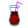 | Singulo | 35 | 5 parts vodka, 1 part Radium, 5 part wine | A blue-space beverage. | |
| Snow White | 35 | 1 part beer, 1 part Lemon-Lime | A cold refreshment. | ||

|
Soy Latte | N/A | 1 part coffee, 1 part soy milk | A nice and refreshing beverage while you are reading. | Heals dizziness, drowsiness and sleeping; heats up if frozen and 20% chance per tick to heal 1 brute damage in a random body part. |
| Spriter's Bane | 30 | 1 part Black Russian, 1 part rum, 1 part fernet | Tastes better than it looks. | Gives you a black outline on drinking, that can be washed away. After 5 cycles occasionally temporarily blurs your vision. After 40 gives HUD hallucinations. After 100 cycles occasionally temporarily blinds you. | |
| Squirt Cider | 40 | 1 part water, 1 part tomato juice, 1 part nutriment | Fermented squirt extract with a nose of stale bread and ocean water. Whatever a squirt is. | Spirit from Bastion | |
| 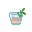 | Stinger | 25 | 10 parts cognac, 5 parts creme de menthe | A snappy way to end the day. | IBA Official Cocktail |
| Sugar Rush | 10 | 2 parts sugar, 1 part lemon juice, 1 part wine | Sweet, light, and fruity - as girly as it gets. | Has a slight nutritional value but lowers your satiety as it's practically junk food. Drink from VA-11 Hall-A | |

|
Syndicate Bomb | 90 | 1 part Whiskey Cola, 1 part beer | A syndicate bomb. | Fluff: two glasses connected with a tank valve. You need to drink from the valve, else it spills. |
| 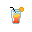 | Tequila Sunrise | 45 | 2 parts tequila, 2 parts orange juice, 1 part grenadine | Oh great, now you feel nostalgic about sunrises back on Terra... | Causes glowing. IBA Official Cocktail |

|
The Manly Dorf | 100 | 1 parts beer, 2 parts ale | A manly concoction made from Ale and Beer. Intended for true men only. | Heals people with the dwarf mutation. Reference to Dwarf Fortress |
| Thirteen Loko | 80 | 1 part vodka, 1 part lime juice, 1 part coffee | This is a glass of Thirteen Loko, it appears to be of the highest quality. The drink, not the glass. | Wakes you up and cools you down if overheated. Causes addiction at 30u and overdose at 60u. Addiction does nothing, but overdosing will first cause a 1.5 second stun and jitteriness. It will then have a 7% chance per tick to force drop held items, 7% chance to cause a random message of discomfort, 5% chance to permanently blind you or melt your eyes out if already blind, 3% chance to cause a seizure (10 seconds of unconsciousness) and a 1% chance of causing a heart attack. | |

|
Three Mile Island Iced Tea | 10 | 10 parts Long Island Iced Tea, 1 part Uranium | A glass of this is sure to prevent a meltdown. | Makes you druggy. Makes 10 parts instead of 11. |

|
Toxins Special | 25 | 2 parts rum, 1 part vermouth, 2 parts Plasma | Whoah, this thing is on FIRE! CALL THE DAMN SHUTTLE!!! | Heats you up if frozen. Best served in a shot glass. |
| Trappist Beer | 40 | 2 parts ale, 2 parts holy water, 1 part sugar | A strong dark ale brewed by space-monks. | If you're a chaplain it reduces jittering, stuttering and heals 2.5 burn per tick. | |

|
Triple Citrus | N/A | 1 part Lemon Juice, 1 part Lime Juice, 1 part Orange Juice | Triple the citrus, triple the fun. | Can be used to make Colorful Reagent. Results in 5 parts instead of 3. |
| Turbo | 85 | 2 parts moonshine, 1 part , 1 part Sugar Rush, 1 part Pwr Game | A turbulent cocktail for outlaw hoverbikers. | Regenerates your stamina faster the more drunk you are. | |
| Vanilla Pudding | N/A | 5 parts milk, 5 parts vanilla, 5 parts eggyolk | A vanilla flavored pudding in a glass. | ||

|
Vodka and Tonic | 70 | 2 parts vodka, 1 part tonic water | For when a gin and tonic isn't russian enough. | |
| Vodka Martini | 65 | 2 parts vodka, 1 part vermouth | A bastardisation of the classic martini. Still great. | ||
|
|
Whiskey Cola | 70 | 2 parts whiskey, 1 part Space Cola | An innocent-looking mixture of cola and Whiskey. Delicious. | |
| 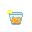 | Whiskey Soda | 70 | 2 parts whiskey, 1 part soda water | Ultimate refreshment. | |
| 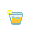 | Whiskey Sour | 35 | 1 part whiskey, 1 part lemon juice, 1 part sugar | Lemon juice/whiskey/sugar mixture. Moderate alcohol content. | |
| 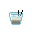 | White Russian | 50 | 3 Black Russian, 2 part cream | A very nice looking drink. But that's just, like, your opinion, man. | IBA Official Cocktail |

|
Wizz Fizz | 50 | 1 part champagne, 1 part Soda Water, 1 part triple sec | A magical potion, fizzy and wild! However the taste, you will find, is quite mild. | Heals wizards 1 of every damage type per tick. |
|
|
..What? | N/A | Fail a recipe | You can't really tell what this is. | You get this when there is something else in the glass |
Juice Cartons
By using cardboard you can make and fill these cartons with 15 units of anything. Perfect for those precious little assistants.